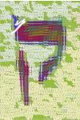

Introduction
QOF, the Query Object Framework, provides a set of C Language utilities for performing generic structured complex queries on a set of data held by a set of C/C++ objects. This framework is unique in that it does NOT require SQL or any database at all to perform the query. Thus, it allows programmers to add query support to their applications without having to hook into an SQL Database.
Typically, if you have an app, and you want to add the ability to show a set of reports, you will need the ability to perform queries in order to get the data you need to show a report. Of course, you can always write a set of ad-hoc subroutines to return the data that you need. But this kind of a programming style is not extensible: just wait till you get a user who wants a slightly different report.
The idea behind QOF is to provide a generic framework so that any query can be executed, including queries designed by the end-user. Normally, this is possible only if you use a database that supports SQL, and then only if you deeply embed the database into your application. QOF provides simpler, more natural way to work with objects.
Examples
Generating examples of your own

Writing new QOF objects and examples can be a tad repetitive so QOF generator automates the process using HTML forms and PHP. The generator is still new but it does create usable C code and an example program that can be compiled against current QOF CVS.
Using qof-generator with common front-end code
A second role for qof-generator involves providing a central repository for
common front-end code that cannot go into QOF itself. Unlike backends, it seems
strange to make a front-end into a GModule (although it can probably be done) and
front-ends require dependencies that simply do not fit with the wider remit of the
libqof1 library. So qof-main.c|h and qof-shell.c|h will
be updated from qof-generator so that each project can benefit from improvements
made elsewhere.
Documentation
The API documentation is embedded in the header files and can be viewed as HMTL.
Support
Support should be obtained by subscribing to the mailing list: http://lists.alioth.debian.org/mailman/listinfo/qof-devel
Origins
QOF is an offshoot from the GnuCash Project, where this framework is a deep, central component. QOF is basically the ?GnuCash "engine" with all of the financial objects removed. As such, QOF is "tried and true", and has proven its worth.
Function
Besides the query framework, QOF also provides a number of other base functions from ?GnuCash and a few extensions of its own:
Universally-Unique 128-bit identifiers These can be used to reference an object without having to have a pointer to it: references can be stored in files, passed over the net, etc.
Persistent-Storage backend A collection of objects can be associated with a particular data store. Besides just reading from and writing to the backend, queries can be passed to the backend, so that if a particular object does not exist locally, it can be fetched from the backend.
Key-Value Pair trees (also known as "frames and slots"). KVP trees provide a generic, extensible way to hang additional data onto an object. The trees store the data hierarchically, in a set of hash tables, and can be accessed using a URL-like path name. KVP trees are a great way to allow objects to be extensible.
Log Utilities Allow warning, error and debugging messages to be enabled or disabled at run-time, thus allowing individual components of an application to be individually traced.
Numeric support Provides a set of exact-math functions for quantities that can be expressed as ratios. In particular, this is handy for working with money and prices, where round-off errors need to be eliminated and/or precisely controlled.
Date and time utilities - True 64bit handling of all times (seconds and nanoseconds) as well as all calendar dates. With the exception of locale-sensitive formats, standard parsing and printing commands have been extended to cope with all possible times and dates within a couple of dozen times the age of the universe. All dates and times are consistent between platforms, whether timet is 32bit or 64bit. Conversion to limited types like struct tm and timet is supported within the range of the respective type, and sensible errors when out of range. (32bit time_t values will overflow in 2038.)
Generic XML format For data interchange. QOF objects can be translated and mapped between applications, liberating the user's data from the original application.
Book merging Allows easy import / export of QOF data and handles collisions and user intervention.
Undo support Allows parameter level undo and redo support with programmable begin and end points. Each begin and end marks a single undo operation which can contain multiple parameter changes, entity creations or deletions according to the needs of the user. Undo currently supports up to 300 operations.
SQLite backend Intended for embedded usage only but relatively stable. Non-embedded systems may want to wait for the libgnome-db backend that will support plugins to various database managers, including sqlite.
Project Goals
Below are some concrete project goals.
See "Why QOF?" for the more abstract ideas behind QOF, including the relationships between "database-driven", "program-driven" and "data-centric" programming explored at Data-Freedom.org.
Provide an object framework that allows programmers to create expressive queries that will search through a collection of objects, returning the desired set of objects.
Status: Completed, in that queries can be built and run. Queries can be built with either a low-level C API, or by writing in an SQL-like language (for example, SELECT * FROM Transaction WHERE date='15.06.2003';).
Provide integration with database backends. In particular, the programmer should be able to use QOF to create a local 'cache' of objects that mirrors a subset of the contents in a remote database. The idea is that applications, by working with a local copy, can be highly responsive and have good performance. On the other hand, by working with only a subset of the remote data, the application can avoid having a huge memory footprint. This is a very unique feature: most applications take an all-or-nothing approach, where either all of the data is sucked into the application, or none is. Applications that pull in all of the data have terrible startup times, since they need to load either a huge file or make a huge database query. They also use a huge amount of memory. Applications that pull in none of their data, and instead issue SQL queries as needed, tend to have terrible performance profiles, since the user must wait for the query to complete and return data. In other words, QOF provides scalability: instead of the all-or-nothing approach, it provides a middle ground, allowing small fast apps to access huge databases.
Status: The ?GnuCash backend provides access to file and to SQL storage. However, not all of this code has been abstracted out in a generic way to be brought back into QOF. Linas has got the major pieces ready to go, in the DWI project, but they're not integrated yet. Neil has added support for partial books that make this cache possible and merging that makes the data in the partial books accessible. Partial books also make it simple to export an arbitrary selection of objects and entities. QOF v0.6.0 starts the process of using
libgda- a data abstraction layer inherited from Gnome-DB but available for use by non-Gnome applications. This should be able to provide the generic access to various database managers like Postgres, MySQL, SQLite, Oracle and others using ODBC. Unfortunately, although work has begun to use libgda, the current gnome-db stable release does not support creating (or deleting) tables. The module is now under active development as part of the transition to libqof2.The current 'client-side' SQL engine is rather basic in its features and performance. For example, the current search over object fields is O(N), because each object instance is checked for a match. It would be nice to add support for 'primary keys' and/or indexes as the first step towards a query optimizer. Alternately (or in addition), a different query engine might be wedged into place. For example, sqllite might make for an excellent client-side sql engine: its small fast and optimized.
Provide for off-line operation. Because the object data is cached locally, users should be able to continue doing useful work even if they are not attached to the net. When they regain net access, QOF should be able to resynchronize with the remote servers.
Status: Implemented as XML. Any book (partial or complete) can be written out to XML and read back in to any QOF application.
Provide memory-management facilities. If objects in the local object cache haven't been used in a while, and the application memory usage is getting too large, the unused objects should be "reaped" or garbage-collected. Of course, this can be done only if the object is fully in sync with the persistent storage backend. Status: just an idea, not started.
Downloads
?SourceForge
The source code release for v0.7.5 is available from ?SourceForge. The next release will be made from Alioth.
Debian
Packages are available in unstable, testing and stable.
Ubuntu
All releases since Dapper have included QOF. Feisty is the first to include v0.7 or later.
Gentoo
QOF 0.7.4 is available in the official repository of Gentoo Linux.
RPM packages
There is a sample .spec file available in QOF CVS, available via SourceForge. RPM packages have been prepared for v0.6.4 in Fedora 4 and 5 as well as ?OpenSuSE Factory.
Mac OSX & Fink
Packages are also possible for Fink and ?DarwinPorts (Mac OSX) - a sample Finkinfo file is provided in QOF CVS via SourceForge.
Project Status
This code is in active, daily use in several projects and is 'stable' code. See the roadmap for the current development direction.
Some projects currently using QOF are:
- GnoTime (Gnome Time Tracker).
- GnuCash - modified source.
- pilot-qof (Query Palm databases).
- DWI (Data With Interaction).
- CashUtil (the gnucash command line interface).
- gpe-expenses for embedded devices like iPAQs.
Written by Linas Vepstas <linas@linas.org> April 2004
Last updated by Neil Williams <linux@codehelp.co.uk> December 2007.

The copyright licensing notice below applies to this text.
Copyright © 2004 Linas Vepstas
Copyright © 2005-2008 Neil Williams
Permission is granted to copy, distribute, and/or modify this document under the terms of the GNU Free Documentation License, Version 1.2 or any later version published by the Free Software Foundation; with no Invariant Sections, with no Front-Cover Texts, and with no Back-Cover Texts. In installed versions, the licence can be found in the copyright file.
This site is powered by ikiwiki.